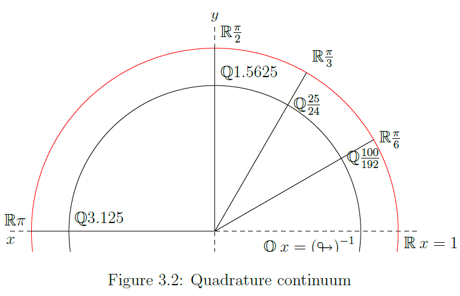

Working notebook — speculative, unfinished, not peer-reviewed.
There is no set whose cardinality is strictly between that of the integers and the real numbers.
—Wikipedia: The continuum hypothesis
>>In set theory, the cardinality of the continuum is the cardinality or "size" of the set of real numbers $\mathbb {R}$ , sometimes called the continuum. It is an infinite cardinal number and is denoted by $\mathfrak {c}$ (lowercase fraktur "c") or $\mathbb {\left|R\right|}$
>>The real numbers $\mathbb {R}$ are more numerous than the natural numbers $\mathbb{N}$. Moreover, $\mathbb {R}$ has the same number of elements as the power set of $\mathbb {N}$. Symbolically, if the cardinality of $\mathbb {N}$ is denoted as $\aleph _{0}$, the cardinality of the continuum is $$\mathfrak {c}=2^{\aleph _{0}}>\aleph _{0}\,.$$
>>This was proven by Georg Cantor in his uncountability proof of 1874,.... The inequality was later stated more simply in his diagonal argument in 1891. Cantor defined cardinality in terms of bijective functions: two sets have the same cardinality if, and only if, there exists a bijective function between them.
>>Between any two real numbers a < b, no matter how close they are to each other, there are always infinitely many other real numbers, and Cantor showed that they are as many as those contained in the whole set of real numbers. In other words, the open interval (a,b) is equinumerous with $\mathbb {R}$.....
—Wikipedia: The cardinality of the continuum
>Cantor defined cardinality in terms of bijective functions: two sets have the same cardinality if, and only if, there exists a bijective function between them.
Between the set of rational numbers $\mathbb{Q}$ and natural numbers $\mathbb{N}$ exists a bijection, those can be put in a one to one correspondence using [Cantor's diagonal argument][3]. However, between the set of real numbers $\mathbb{R}$ and natural numbers $\mathbb{N}$ such a bijection is not believed to be possible.
The argument 'Between any two real numbers a < b, no matter how close they are to each other, there are always infinitely many other real numbers,...' we do not dispute. The diagonal argument, for instance, is restricted to ordering numbers in the two dimensional plane. Inhere we do not propose that a bijection can be found by ordering in n dimensional space, in stead a more profound method is discovered by examining the progressive sum of inverse primorials.
Chapter 3, The primorial function, produces a counterexample to CH that hinges on, keep the door open for now, the equivalence $\mathbb{Q}\equiv\mathbb{R}$ and thus because $\mathbb{Q}$ is countable infinite also $\mathbb{R}$ must be, if $\mathbb{Q}\equiv\mathbb{R}$ holds.
Hidden sqare root of 2
The primorial function is similar to the factorial function for the natural numbers but involves the product over the primes. \begin{equation}P_{n}\#=\prod_{k=1}^{n}P_{k}=2\times3\times5\times7\times\dots\in\mathbb{N}
\label{eq:03.01}
\tag{03.01}
\end{equation}
Table 3.01 Primorial root 2 approach
Table 3.01 has 7 columns,
row number 'n'
the nth prime number $P_{n}=\left\{2,5,7,11,13,\dots\right\}$
the consequtive primorials $P_{n}\#=\left\{2,6,30,210,2310,\dots\right\}$
the inverse of the primorials $\underset{n=1}{\Pi\thinspace }\left(P_{n}\right)^{\text{ -1}}=\left\{\frac{1}{2},\frac{1}{6},\frac{1}{30},\frac{1}{210},\frac{1}{2310},\dots\right\}$.
$P_{s}$, is the progressing sum of primorials that seems to approach, but falls short of $\sqrt[2]{2}^{\text{ -1}}\approx 0.7071067812\dots$.
Column 6, ${\small \Delta P_{s}\rightarrow\left(\sqrt{2}\right)^{\text{-1}}}$ shows the discrepancy between column 5, the progressive sum, and $\sqrt[2]{2}^{\text{ -1}}$. The limit of this column states a closed formula, ${\small \sqrt{\looparrowright}=\sqrt{\frac{2\pi}{2.5^2}}}$,
a.k.a. the square root of the quadrature constant $qc=\looparrowright=\frac{2\pi}{2.5^2}$. Column 5, $P_{s}$, will have a limit of $\frac{\sqrt[2]{2}^{\text{ -1}}}{\sqrt[2]{\looparrowright}}\approx0.705236979\dots$
column 7 identifies the row as upper- or lower-bound (ub or lb), which will become clear in 'Table 3.02 Primorial lb/ub oscillation'
Table 3.02 Primorial lb/ub oscillation has 6 columns of which the first three are found in table 3.01.
Column 4, ${\small P_{s}\thinspace increment}$ shows the reason for distinguishing a upper and lower bound because clearly the partial increments oscillate between $\frac{1}{2}$ and $\frac{1}{6}$.
Column 5, $\frac{lb}{ub}$ gives the ratio of change between the upper and lower bound, and we deduce that ${\small \underset{n\rightarrow\infty}{Lim}\frac{lb}{ub}=\frac{1}{\pi(\looparrowright)^{-1}}=\frac{1}{3.125}=0.32}$.
Finally column 6, ${\small \Delta\frac{lb_{n\rightarrow\infty}}{lb_{n=1}}=\text{ 3}\frac{lb}{ub}}$. In the limit this will be ${\small P\Delta=\frac{24}{25}\text{=0.96}}$.
Table 3.2 — Primorial lb–ub oscillation
n
\(P_n\)
\(\uparrow\downarrow\)
\(P_s \; increment\)
\(\tfrac{lb}{ub}\)
\(P_{\Delta}=\tfrac{lb_{\infty}}{lb_{n=1}}\)
1
2
ub
\(\tfrac{1}{2}\)
2
3
lb
\(\tfrac{1}{6}\)
\(\tfrac{1}{3}\)
1
3
5
ub
\(\tfrac{16}{3}\,/\,10 = 0.5333\dots\)
4
7
lb
0.1714285714
0.3214285714
0.964285714
5
11
ub
0.5337662338
6
13
lb
0.1714618715
0.3212302701
0.96369081
7
17
ub
0.5337681926
8
19
lb
0.1714619746
0.3212292844
0.963687853
9
23
ub
0.5337681971
10
29
lb
0.1714619747
0.321229282
0.963687846
\(\infty\)
\(\infty\)
\(\sim (\sqrt{2})^{-1}\)
\(0.32 = \tfrac{1}{3.125}\)
\(P_{\Delta}=\tfrac{24}{25}=0.96\)
Strange real attractor, or imaginary rational limit
The quadrature constant (qc) is the stick that puts distance between rational and real values. But figure 3.01 IS a bijection that scalesem> with $\mathbb{Q}$: $3.125\in\mathbb{Q}\leftrightarrow\pi\in\mathbb{R}$, and does so in a direct fasion, skipping over an infinity of rational numbers, $q\in\mathbb{Q}$, that lay between the paired dimensionless points, e.g., $\forall x\in\mathbb{R}, x=q\looparrowright, \mathbb{O}=\\{x-q\\}\neq\\{0\\}$.
This does not conform to the currently held theory which assumes that a limit exist where the real number x occupies a dimensionless point, which point is not reachable by a finite number of rational (discrete) intermittend steps.
A typical Dedekind cut of the rational numbers $\mathbb{Q}$ is given by the partition $\left(A,B\right)$ with
>>$\;A=\{a\in \mathbb{Q}:a^{2}<2{\text{ or }}a<0\}$
>>$\;B=\{b\in \mathbb{Q}:b^{2}\geq 2{\text{ and }}b\geq 0\}$
—Wikipedia: Dedekind cut
>This cut represents the irrational number $\sqrt{2}$ in Dedekind's construction. The essential idea is that we use a set $A$, which is the set of all rational numbers whose squares are less than 2, to "represent" number $\sqrt{2}$, and further, by defining properly arithmetic operators over these sets (addition, subtraction, multiplication, and division), these sets (together with these arithmetic operations) form the familiar real numbers.
The definition of the real number $\sqrt{2}$, as wedged between the set A for which $a\in \mathbb{Q}, a^2 < 2\text{ and }a \lt 0$, and set B for which $b\in \mathbb{Q}, b^2 >= 2\text{ and }b \geq 0$, containing al rational numbers who's square is less then 2. This is an algorithm that seeks to identify a unique real number that in essence is analogues to 'a coordinate that occupies space between two adjacent coordinates at Planck length distance'.
The radial argument, diffuse coordinates
The continuum hypothesis tels us that a straight line segment, like the individual chords of a closed polygon, represents the continuum. So also does the (perfect) circle. We construct a circle with a radius of $r=2\pi$, a $2\pi:1$ scale model of the unit circle. The circumference is $c=\left(2\pi\right)^{2}=4\pi^{2}\approx39.4784176\dots$ and consists of an infinity of dimensionless points. Then we construct a circle at a radius of $r=\frac{2\pi}{\looparrowright}=2.5^2$, the circumference is $c=\left(2.5^2\right)^{2}=39.0625$.
Figure 3.02 ( for illustration purposes not to scale), is a scaled down version, $1:2\pi$, and thus a unit circle lined with a filament between $x\left<\frac{1}{\looparrowright},1\right>$ that in the QGF is named $C_{box}$. In physics this lining filament is the extent of the convex set shaping our universe. A dynamic version of the $C_{box}$ that can only exist in physical reality, and must be inferred from the QGF.
Now we add a radial of width 1 dimensionless point from $\mathbb{O}\rightarrow x=0$ to $\mathbb{R}\rightarrow x=2\pi$, and rotate anticlockwise. Then we rotate by a set number of degrees, or radians, to project to a position and analyze from there.
Figure 3.02 (not to scale), is a model of the unit circle. At $r=1$, the circumference is both in ratio to the radius, as well as real number length $c=2\pi\thinspace r=2\pi$.
This changes when we modify the radius to $r=\frac{1}{\looparrowright}$. The proportional ratio radius to circumference maintains $1:\pi$, but the circumference can now be stated as $q\in\mathbb{Q},\thinspace q = \frac{2\pi}{\looparrowright}=2.5^2$. Also for $\pi\thinspace rad\rightarrow 3.125$, $\frac{\pi}{2}\thinspace rad\rightarrow \frac{1}{0.64}$, $\frac{\pi}{3}\thinspace rad\rightarrow \frac{1}{0.96}$, and $\frac{\pi}{6}\thinspace rad\rightarrow \frac{1}{1.92}$, all $q\in\mathbb{Q}$.
Although the circumferences differ in geometric length, the radial (1 dimensionless point thick) seems to indicate, because $2\pi$ spans the whole continuum in both cases, that the same dimensionless point references both $\pi$ and $\frac{\pi}{\looparrowright}$. Afterall, the only method available for addressing the dimensionless coordinates $\pi$ and $\frac{\pi}{\looparrowright}$ on both circumferences is by means of angle bisecting the circle, and it seems that both share the same angular property.
The argument might be that the $\mathbb{Q}$ circle is 'diffuser in partition' than the $\mathbb{R}$ circle, and one cant be sure to address 3.125 at that angle is not realy convincing. Figure F3.01 Quadrature constant - leap, allready shows that $2\pi-2.5^2$ or $\approx \frac{0.0331853072\dots}{2\pi}\approx0.005$ or $\frac{1}{200}\mathbb{R}$ is jumped. The method here is not to get arbitrarely close to $\pi$ or perform a Dedekind cut to cunningly isolate the rascal by pure logic. This 'method' is more like crossing the bulk wormhole style, as if being really one coordinate.
The circumference at $r=\frac{1}{\looparrowright}$ can be envisioned as an inscribed polygon of $\#\text{ chords }$, each the width of a dimensionless point, but 'linear chords' nonetheless?
F3.02 Quadrature continuum
In figure F3.02 it seems that in this case 'pointlike' and 'linear' is a distiction whithout a difference. Not because we will not accept abstract mathematics, but because the Quadrature Geometric Framework (QGF) is based on *a first principle that arises with physical reality*. The consequence is that where mathematical abstraction allows for defining arbitrary length scales, nature seems to be restricted by the Planck length. As mentioned before discussing the Dedekind cut, an algorithm that seeks to identify a unique real number that in essence is analogues to *'a coordinate that occupies space between two adjacent coordinates at Planck length distance'*.
The sets $\mathbb{Q}$ and $\mathbb{R}$ are only distinct in mathematical appearance, but do so because they express different topological points of view in physical expression, i.e. the proposed equivalence $\mathbb{Q}\equiv\mathbb{R}$ is obscured by a horizon problem.
The QGF provides the geometric mathematical model for understanding the zeta zeros as chords of n-gon, but those geometric chords cannot exist outside the bounds of the radius $r=2\pi$, which defines the bounds of the convex set. The inference must be that those chords exist in the narrow confinement of $C_{box}\thinspace r=\left<\frac{1}{\looparrowright} ,1\right>$, the 'lining' of the convex set.
The base of the QGF
At $\angle 90°$ the radian crossing the two circles adressess two dimensionless points, one at $c=\frac{1}{0.64}\in\mathbb{Q}$, and the other in $c=\frac{\pi}{2}\in\mathbb{R}$.
The same holds arguably for other angles like those addressing $c=\left\{2\pi\leftrightarrow2.5^{2},\pi\leftrightarrow3\frac{1}{8},\frac{\pi}{2}\leftrightarrow\frac{25}{16},\dots\right\}$.
Table TWB02.01 lists 10 rotations of 10° each from 0° to 90°;
Step increment 0 to 1
'360°', starting from coordinate $\left(1,0\right)$ in increments of 10°, up to 90°
The angle in π radians
The angle in π radians over qc
Sine of π rad
Cosine of π rad
Table WB 2.1 — Rotation to coordinate
n
\(360°\)
\(\pi\,rad\)
\(\frac{π\,rad}{\looparrowright}\)
\(\sin(x)\)
\(\cos(x)\)
0
360°
\({2\pi}\)
\(\frac{1}{0.16}=2.5^2\)
\({0}\)
\({1}\)
1
10°
\({0.174532925\cdots}\)
\(\frac{1}{5.76}\)
\({0.173481777\cdots}\)
\({0.984807753\cdots}\)
2
20°
\({0.3490658504\cdots}\)
\(\frac{1}{2.88}\)
\({0.3420201433\cdots}\)
\({0.9396926208\cdots}\)
3
30°
\({\frac{\pi}{6}=0.5235987756\cdots}\)
\(\frac{1}{1.92}\)
\({\sqrt{\frac{1}{4}}=0.5}\)
\({\sqrt{\frac{3}{4}}=0.8660254038\cdots}\)
4
40°
\({0.6981317008\cdots}\)
\(\frac{1}{1.44}\)
\({0.6427876097\cdots}\)
\({0.7660444431\cdots}\)
5
50°
\({0.872664626\cdots}\)
\(\frac{1}{1.152}\)
\({0.7660444431\cdots}\)
\({0.6427876097\cdots}\)
6
60°
\({\frac{\pi}{3}=1.047197551\cdots}\)
\(\frac{1}{0.96}\)
\({\sqrt{\frac{3}{4}}=0.8660254038\cdots}\)
\({\sqrt{\frac{1}{4}}=0.5\cdots}\)
7
70°
\({1.221730476\cdots}\)
\({0.8228571429}\)
\({0.9396926208\cdots}\)
\({0.3420201433\cdots}\)
8
80°
\({1.396263402\cdots}\)
\(\frac{1}{0.72}\)
\({0.984807753\cdots}\)
\({0.1736481777\cdots}\)
9
90°
\({\frac{\pi}{2}=1.570796327\cdots}\)
\(\frac{1}{0.64}\)
\({1}\)
\({0}\)
The real horizon
At (x,y) coordinate (2π,0) a 'horizon' is defined which is considered unreachable by rational increments alone. In essence this is what the topological argument for real numbers tells us.
The rationals are a dense subset of the real numbers: every real number has rational numbers arbitrarily close to it. A related property is that rational numbers are the only numbers with finite expansions as regular continued fractions.
—Wikipedia: Real numbers and topological properties
There is discussion whether a more fundamental theory exists replacing the real numbers.
In physics
In the physical sciences, most physical constants such as the universal gravitational constant, and physical variables, such as position, mass, speed, and electric charge, are modeled using real numbers.
In fact, the fundamental physical theories such as classical mechanics, electromagnetism, quantum mechanics, general relativity and the standard model are described using mathematical structures, typically smooth manifolds or Hilbert spaces, that are based on the real numbers, although actual measurements of physical quantities are of finite accuracy and precision.
Physicists have occasionally suggested that a more fundamental theory would replace the real numbers with quantities that do not form a continuum, but such proposals remain speculative.
—Wikipedia: Real numbers in physics
Primorial hexagon and rational numbers
As shown the circumference of our constructed circle is $c=\left(2.5^2\right)^{2}=39.0625$. This is normalized in figure F3.02 ( for illustration purposes not to scale), to $1:2\pi$, and thus a unit circle lined with a fillament between $x\left<\frac{1}{\looparrowright},1\right>$ (QGF $C_{box}$).
In figure F3.04 Primorial hexagon, the construction starts with a unmarked ruler and a set of compasses. A x-axis is drawn, a point is chosen and a circle drawn. Then a vesica pisces is constructed, and the orthogonal crossing the x-axis drawn. The crossing point clearly disects the vesica pisces and has coordinate $\left(\frac{1}{2},0\right)$
F3.04 Primorial hexagon
Lets replace the real numbers
The maximum extend of the unit circle radius is $2.5^2=6.25=\frac{24}{4}+\frac{1}{4}=\frac{25}{4}$. And the inverse $\frac{1}{2.5^2}=0.16$, This gives us a convenient formula for locating the x coordinate in the QGF for the $n_{th}$ n-gon: $q_{n}=\frac{n}{2.5^{2}}=n\times 0.16$, e.g. $q_{6}=\frac{6}{2.5^{2}}=6\times \frac{1}{0.16}=0.96$.
The set of natural numbers in the QGF is in fact a subset of the rational numbers $\mathbb{Q}$. This is because the unit circle has its pole at $2\pi\text{ and }2.5^2$. Thus $2.5^{2}= 6\frac{1}{4}$, and therefore 6 projects at $q_{6}=\frac{6}{2.5^{2}}=0.96$.
This means that $n\in\mathbb{Q}$ are out of sync with the usual spacing of $\mathbb{N}$ that confirms with attributing intervals of $\mathbb{R}$. The interval in the QGF with respect to the continuum is the now familiar $\Delta\thinspace n\forall\thinspace n\in\mathbb{N}\frac{1}{\left(2.5^{2}\right)^\text{ -1}}={\small 0.16\,Unit}$.
The unit, in the QGF, for natural numbers is ${QGF}_{Un\thinspace\in\thinspace\mathbb{N}}=\frac{4}{25}$, this makes the standard unit for the QGF ${QGF}_{U}=\frac{1}{25}$, or ${QGF}_{U}=\frac{n\thinspace\in\thinspace \mathbb{QGF}}{4}$.
It is confusing at the least that because of this discrepancy the interval $\Delta n\in\mathbb{N}_{QGF}$ seems to deviate a scale factor of 0.96 from the unit radius of the enclosing QGF. However, the interval $\left<\frac{1}{16},\frac{2}{16}\right>$, still scales seamlessly with $\mathbb{R}$.
F7.04 QGF natural state normalized pole
Figure F7.04 QGF natural state normalized pole, shows that all the action that in the QGF model projects between 0 and 2.5<sup>2</sup>, in fact should be scaled down by a factor 2.5<sup>2</sup>, and project between $q=0$ and $q=\frac{1}{\looparrowright}\propto 2.5^{2}$.